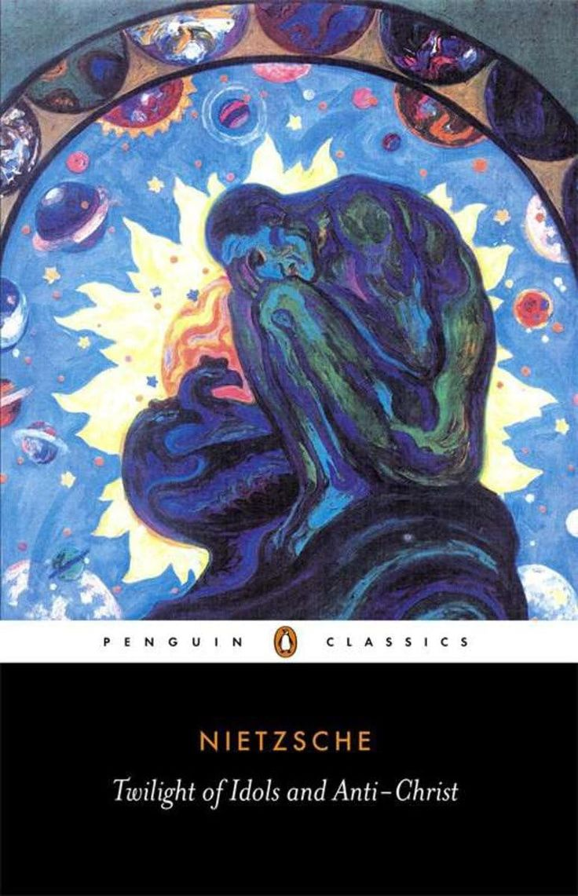

The Twilight of the Idols and Antichrist
Twilight is the best primer to Nietzsche’s thought. If you want something truly mind-storming, Beyond Good and Evil is an excellent choice—but it demands an understanding of Nietzsche’s style and way of articulating his ideas. So, Twilight serves as a useful prerequisite for BGE. Twilight of the Idols is fundamentally about moving beyond traditional ways of thinking.
View on Amazon →